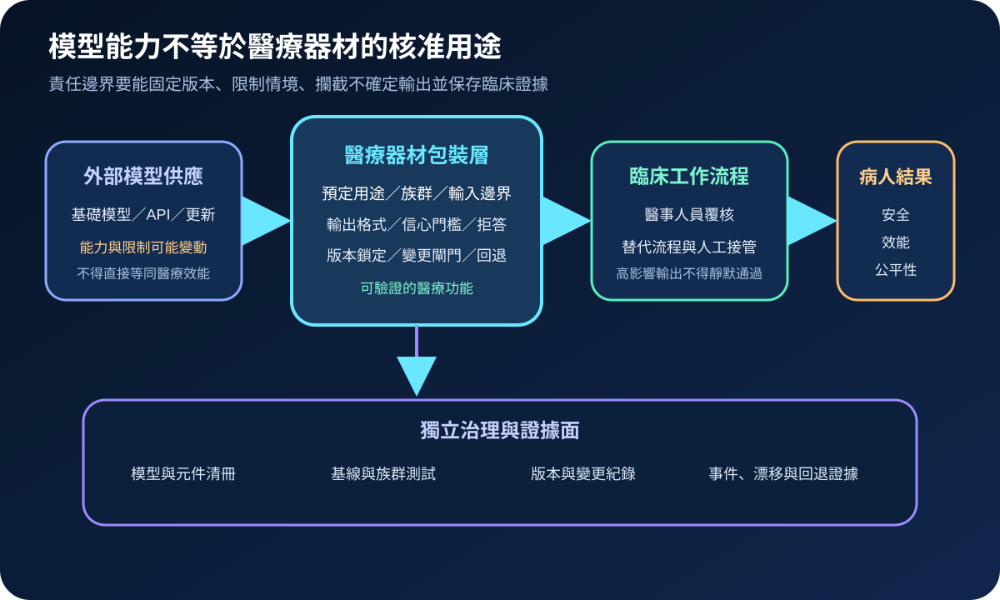
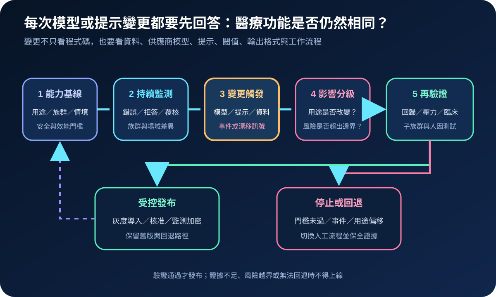
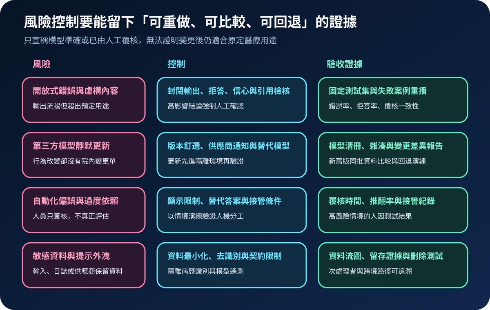

醫療資安國際觀察 · 2026-09-22
生成式 AI 醫療器材如何管住模型變更：從能力基線到上市後再驗證
作者：Dr. William｜醫療資訊與資安治理實務工作者
生成式 AI 可產生未預先列舉的文字、影像或多模態輸出。當它成為醫療器材功能的一部分，治理重點不只在單次準確率，而在預定用途、第三方模型依賴、變更後再驗證、臨床人工接管與可回退能力。
名詞解釋：開放式輸出與持續變更
生成式 AI 醫療器材是以生成模型支援診斷、治療、監測或其他醫療目的的軟體功能；能力基線固定用途、族群、資料型態、限制及最低效能；預定變更控制計畫描述可預期修改、驗證方法與影響評估；上市後監測持續觀察錯誤、漂移、使用偏差及新風險。第三方模型的版本更新，也可能改變醫療器材行為。
國際現況與適用邊界
IMDRF 於 2026 年 8 月發布醫療器材預定變更控制計畫的最終技術文件，整理可預期修改、修改協定、影響評估及持續安全有效的共同原則；2026 年 4 月公開諮詢的 AI 生命週期技術框架，則涵蓋資料、效能、透明度、部署與上市後監測。這兩份文件並未專門限定生成式 AI，本文將其生命週期與變更原則套用於使用生成模型的醫療功能。
美國 FDA 於 2025 年 1 月發布 AI 醫療器材軟體功能生命週期管理草案指引，並於 2025 年 8 月發布預定變更控制計畫最終指引。FDA 要求適用於美國法域，IMDRF 文件也不是台灣的直接法定義務。台灣醫療機構可把其中的問題轉成採購、導入及持續監測條件；產品是否屬醫療器材、可否改版及須採何種查驗程序，仍應依台灣主管機關規範與產品實際用途確認。
適用邊界：一般行政摘要工具、研究原型與具醫療目的的軟體功能不能使用同一套驗收深度。風險分級應依輸出是否影響病人、能否被獨立覆核、錯誤是否可逆及是否可立即切換人工流程。
規劃：先定義責任、版本與驗收門檻
產品清冊需記錄預定用途、目標族群、模型及供應商版本、資料流、輸出限制、人工覆核點與回退版本。臨床單位定義可接受用途及接管條件；資訊與資安團隊管理整合、資料及日誌；採購與法務確認更新通知、次處理者、事件通報及退場權；品質或醫材權責角色管理變更分類與驗收。指標可包含固定測試集通過率、關鍵錯誤率、拒答率、人工推翻率、版本可追溯率及回退時間。

實作：建立可重播的變更閘門
- 固定基線：保存模型版本、系統提示、資料處理、閾值、輸出格式與禁止用途。
- 建立測試包：納入正常、邊界、對抗、少數族群及高風險失敗案例，保留可重播資料與預期結果。
- 監測觸發：供應商更新、提示修改、資料分布漂移、事件或人工推翻率升高時，自動建立變更評估。
- 分級驗證：依用途與風險決定回歸、壓力、人因、資安及臨床驗證深度；高影響變更不得只做功能測試。
- 受控發布：先於隔離或有限場域導入，強化監測並保留舊版；門檻未過時立即停止或回退。
風險：人工覆核不等於風險已消失
開放式錯誤可能看似合理；第三方模型可能靜默更新；人員也可能因自動化偏誤而形式化簽核。控制須同時限制輸出、鎖定版本、顯示不確定性、測試人工接管，並保留可比較的新舊版本證據。NIST 生成式 AI 風險管理框架可協助辨識虛構內容、資料隱私、資訊完整性及供應鏈風險，但不取代醫療器材法規或臨床驗證。

可執行清單
- 是否能列出每項生成式 AI 醫療功能的預定用途、禁用情境與人工接管點？
- 第三方模型、提示、資料處理與閾值是否都有版本紀錄？
- 供應商更新是否會先進入隔離環境，而非直接改變正式行為？
- 固定測試包是否涵蓋高風險失敗案例、少數族群與資安情境？
- 人工覆核是否有推翻率、接管時間及人因測試，而非只有簽核欄位？
- 門檻未過時，能否在既定時間內停止功能、切換人工流程並回退版本？
來源
- IMDRF｜Predetermined Change Control Plans for Medical Devices (PCCP)（發布：2026-08-06；查閱：2026-09-22）
- IMDRF｜Artificial Intelligence in Medical Devices: Technical Framework on Life Cycle Management（公開諮詢：2026-04-10；查閱：2026-09-22）
- FDA｜Artificial Intelligence-Enabled Device Software Functions: Lifecycle Management and Marketing Submission Recommendations（發布：2025-01；查閱：2026-09-22）
- FDA｜Marketing Submission Recommendations for a Predetermined Change Control Plan for Artificial Intelligence-Enabled Device Software Functions（發布：2025-08；查閱：2026-09-22）
- NIST｜Artificial Intelligence Risk Management Framework: Generative Artificial Intelligence Profile（發布：2024-07-26；更新：2026-04-08；查閱：2026-09-22）
內容說明
本文依健康台灣深耕計畫相關治理內容整理，並參考 FDA、IMDRF 與 NIST 公開資料，提出台灣醫療機構可採用的生成式 AI 醫療器材責任邊界、變更閘門、上市後監測及回退驗收方法；不取代台灣主管機關公告、醫療器材查驗程序、臨床判斷、法律意見或個案風險評估。